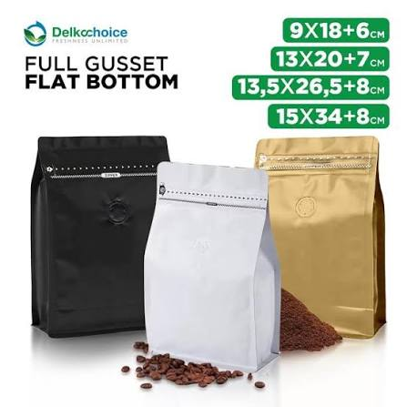
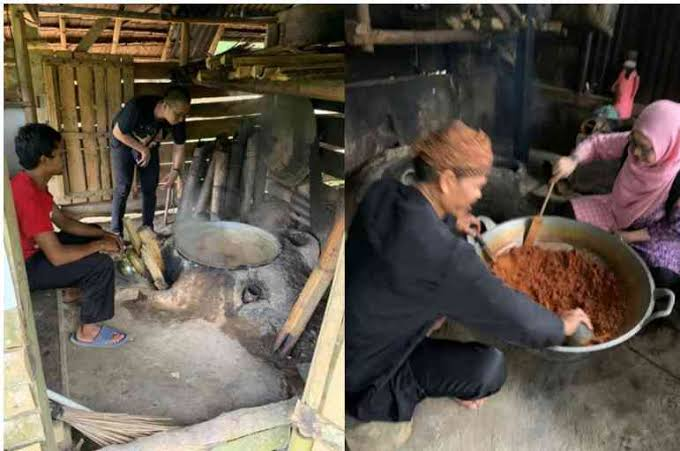
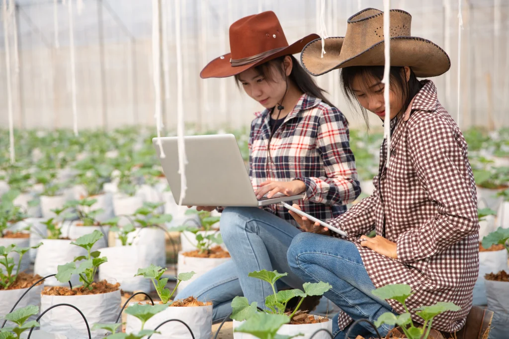
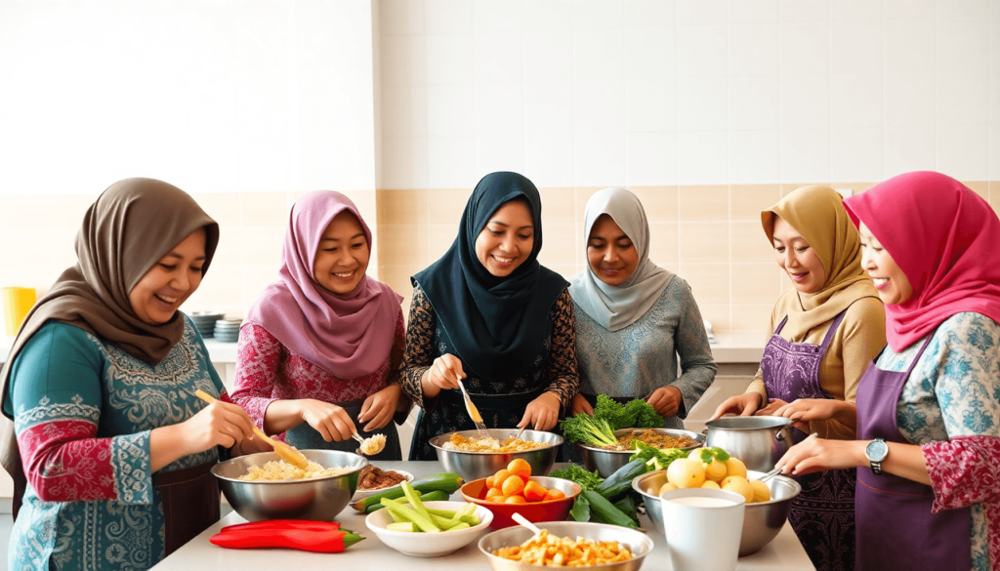

NextStep adalah agensi digital yang berdedikasi membantu UMKM di bidang agribisnis bertransformasi ke dunia digital. Kami mendampingi pelaku hasil tani, peternakan, dan olahan lokal dari tahap awal hingga siap bersaing di pasar nasional maupun global.
"Step by step. Tumbuh bersama."
Kami dari NextStep menggambarkan agensi yang selalu siap menemani UMKM sedikit demi sedikit untuk bisa berkembang di era modern ini. Kami percaya bahwa hasil tani, dan olahan lokal Indonesia memiliki potensi luar biasa besar.
Mengidentifikasi fondasi bisnis, memahami kesiapan internal, serta menyusun pijakan awal digital tanpa beban operasional yang rumit.
Mengaktifkan kanal komunikasi yang relevan, memperkenalkan identitas brand kepada calon konsumen potensial secara teratur.
Mengoptimalkan strategi pemasaran terintegrasi untuk menciptakan loyalitas pasar dan keberlanjutan bisnis jangka panjang.
Layanan digital praktis yang dirancang fleksibel untuk mendukung kapasitas dan kebutuhan spesifik UMKM.
Produksi foto, video, kemasan, dan storytelling otentik yang menonjolkan kualitas kesegaran hasil panen dan keunggulan produk olahan UMKM.
Kelola media sosial agar bisnis lebih aktif, relevan, dan dekat dengan pelanggan melalui interaksi berkala yang bernilai.
Susun strategi pemasaran digital yang sesuai dengan target dan kebutuhan bisnis agar modal promosi bekerja efektif.
Pendampingan bertahap dan edukasi bisnis agar pelaku UMKM memahami sistem manajemen sederhana, operasional digital, hingga siap ekspansi
Setiap proses pendampingan dijalankan bertahap demi memastikan transformasi digital terasa nyaman dan dapat diserap oleh tim Anda.
Memahami bisnis, masalah nyata di lapangan, serta tujuan jangka pendek maupun panjang UMKM Anda.
Menyusun strategi digital yang sesuai kebutuhan dan kapasitas anggaran tanpa pemborosan fitur.
Membantu menerapkan strategi secara bertahap, memberikan pelatihan serta supervisi langsung.
Melakukan evaluasi hasil berbasis data nyata dan terus mengembangkan skala bisnis ke fase selanjutnya.
Kami hadir sebagai rekan diskusi yang mendengarkan, bukan sekadar agensi yang mengejar angka instan tanpa pemahaman mendalam.
Setiap bisnis memiliki kebutuhan, ritme, dan tantangan yang berbeda. Kami tidak pernah menggunakan formula umum yang kaku.
Kami menyesuaikan strategi dengan kondisi riil, kesiapan tim, dan kemampuan finansial operasional bisnis saat ini.
Karena pertumbuhan bisnis bukan proses satu malam. Kami senantiasa berada di samping Anda di setiap tahapan kurva pembelajaran.
Setiap strategi diarahkan secara terukur untuk membantu bisnis berkembang, menambah nilai jual, dan memperluas jangkauan pasar.
Kolaborasi bersama pengusaha lokal untuk memperkokoh fondasi digital bisnis mereka.

Merancang ulang kemasan dan identitas visual kedai kopi lokal agar tampil lebih modern tanpa meninggalkan akar kearifan lokal.

Membangun interaksi autentik di Instagram melalui storytelling proses produksi tangan (handmade), menaikkan engagement hingga 240%.

Pemasaran digital terarah menyambut musim panen raya untuk menghubungkan kelompok tani langsung dengan konsumen akhir dan pelaku bisnis kuliner tanpa perantara rantai panjang.

Menyusun narasi edukatif dari kebun hingga ke dapur, menonjolkan proses pascapanen yang higienis guna membangun kepercayaan konsumen terhadap produk pangan segar lokal.
Bagaimana pendampingan bertahap mengubah cara pandang pengusaha UMKM terhadap dunia digital.
"NextStep membantu kami memahami bagaimana bisnis kecil kami bisa mulai masuk ke dunia digital tanpa terasa rumit dan menghabiskan anggaran."
"Pendekatannya sangat bersahabat. Kami tidak dicekoki istilah teknis yang memusingkan, melainkan diajak praktik setahap demi setahap."
"Setelah 3 bulan didampingi, sistem pemesanan online kami jauh lebih rapi dan media sosial toko kami akhirnya punya persona yang konsisten."
Segala hal yang perlu Anda ketahui mengenai model pendampingan kami.